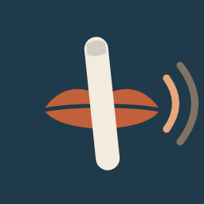

Última actualización: 6 de noviembre de 2026
PSSTH! convierte documentos (PDF, imágenes, texto, EPUB) en lectura en voz alta en tu dispositivo.
La voz natural, la transcripción, la lectura de fórmulas y el aplanado de hojas necesitan modelos que no vienen dentro de la app. Si eliges instalarlos, PSSTH! los descarga desde GitHub (github.com) y Hugging Face (huggingface.co). En esa descarga esos servicios reciben, como en cualquier conexión, tu dirección IP; PSSTH! no les envía ningún otro dato tuyo. Puedes borrar los modelos en «Voces y modelos».
No se usa si no escribes la dirección de un servidor Ollama (por ejemplo, tu propio ordenador en la red de tu casa u oficina). Con esa dirección, PSSTH! le envía el texto que pides resumir o las fotos de hojas que pides leer con IA; si además activas la corrección, también el texto de los documentos que abres. PSSTH! no elige, opera ni recibe datos de ese servidor: el texto va solo a la dirección que tú escribes, y lo que ocurra allí depende de quien lo administre. La conexión usa http sin cifrar, así que úsala solo dentro de una red de confianza. Puedes borrar la dirección o desactivar la corrección en cualquier momento.
No se usa si no la activas. Si entras con tu cuenta de Google, PSSTH! guarda en una carpeta oculta de tu propio Google Drive, que solo esta app puede ver, tu biblioteca, tu avance, tus marcas y los documentos que se sincronizan. Solo pide permiso para esa carpeta: no puede ver tus demás archivos de Drive. El desarrollador no recibe esos datos; quedan en tu cuenta, bajo las condiciones de Google. Puedes cerrar la sesión en la app y quitar el acceso desde la configuración de tu cuenta de Google.
Si pegas un enlace, PSSTH! se conecta a esa página para traer su texto. Si es un video de YouTube, le pide sus subtítulos a YouTube. Esos sitios reciben tu dirección IP y qué página o video pediste.
No se usa si no pones tu propia clave de DeepSeek en Ajustes → DeepSeek. Con tu clave, PSSTH! envía por Internet a DeepSeek (api.deepseek.com) el texto que pides resumir y las fotos de las hojas que pides transcribir, y recibe el resumen o el texto leído. Esos datos quedan sujetos a las condiciones de DeepSeek, y cada uso se cobra en tu cuenta de DeepSeek (la app pone un tope de 30 usos por día). El desarrollador no recibe esos datos. La clave se guarda cifrada en tu dispositivo y puedes borrarla en cualquier momento desde Ajustes.
Los errores de la app se anotan en tu dispositivo. Solo salen si tocas «Enviar informe de errores» y eliges por dónde compartirlos.
El OCR y la síntesis de voz usan las capacidades del sistema operativo de tu dispositivo (Apple Vision y las voces del sistema en iOS; en Android, Google ML Kit a través de Google Play Services para leer texto, códigos QR y escanear páginas, y para reconocer el idioma). Las imágenes y el texto se procesan en el dispositivo; Google puede recibir datos técnicos de uso y diagnóstico de esos componentes según sus propias condiciones. Según la configuración del sistema, algunas voces pueden descargarse de Apple; PSSTH! no participa en esa transferencia.
Al eliminar un documento de la biblioteca se borran su copia local, el texto reconocido, la grabación asociada (si la hay), el progreso y los marcadores. Al desinstalar la aplicación se eliminan los datos guardados en el dispositivo; lo que hayas sincronizado sigue en tu Google Drive hasta que lo quites desde tu cuenta de Google.
dantecartagenacorrea@gmail.com
Para cualquier consulta sobre PSSTH! escribe a dantecartagenacorrea@gmail.com.
PSSTH! es una herramienta que funciona en tu dispositivo: el desarrollador no aloja, revisa ni publica lo que abres o grabas.
Eres responsable de tener derecho a usar los documentos, imágenes y audios que abres en PSSTH!. La app los procesa para tu uso personal; el desarrollador no los recibe, no los guarda y no los comparte.
Si grabas a otras personas, obtén su consentimiento cuando la ley lo exija. Las grabaciones quedan en tu dispositivo, salvo que las compartas o sincronices.
El reconocimiento de texto, la transcripción y la voz pueden contener errores; consulta el documento original para cualquier uso formal. PSSTH! se ofrece tal cual, sin garantías, en la medida en que lo permita la ley aplicable.
PSSTH! usa software de código abierto. Las funciones opcionales usan modelos abiertos, como Supertonic (voz Luna, OpenRAIL-M), Piper (voz Claude), el dictado en español de NVIDIA (CC BY 4.0) y Whisper (MIT), a través de sherpa-onnx. Las licencias completas están en la app, en «Acerca de».